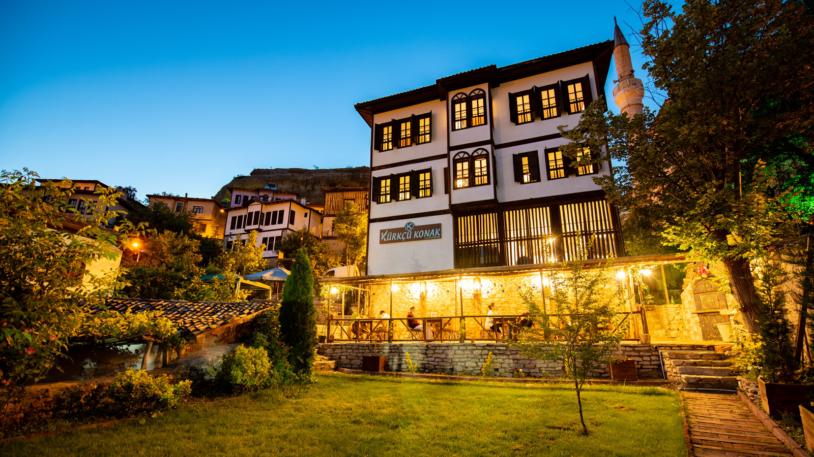

Safranbolu'ya Hoş Geldiniz

Karabük ilinde bulunan Safranbolu, geleneksel Osmanlı mimarisini yansıtan evleri ve tarihi dokusuyla tanınmaktadır.
1994 yılında UNESCO Dünya Mirası Listesi'ne alınan Safranbolu, kültürel mirasıyla önemli bir turizm merkezidir.
Safranbolu; ahşap konakları, taş döşeli sokakları ve yüzyıllardır korunan kültürel mirasıyla ziyaretçilerini geçmişe götüren eşsiz bir şehirdir. Tarihin, doğanın ve yöresel lezzetlerin buluştuğu bu güzel ilçede unutulmaz bir keşfe çıkmaya hazır olun.
Uygulama Durumu
Bağlantı kontrol ediliyor...
Service Worker kontrol ediliyor...